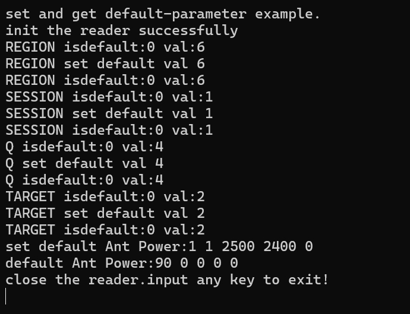

Loading...
Searching...
NoMatches
Default configuration
"Default configuration" refers to the parameters stored in the reader's internal registers, which are read by the module during power-on initialization.
These parameters are used to configure the reader upon its first startup after power-on. Modifying the values of these registers is referred to as
changing the power-on default configuration. This configuration is permanently effective, meaning the parameter values will not be lost even if the
reader is powered off.
The ParamGet and ParamSet functions are
also used to retrieve or modify the power-on default parameters, with the keyword MTR_PARAM_SAVEINMODULE.
C Language Code Example 13- Default Parameters for Reader Power on
/**
* 读写器默认配置获取，设置/reader defalut configure
*/
#include < stdio.h>
#include "ModuleReader.h"
int main()
{
char c;
int hreader;
char* address="192.168.1.160";
int antportnum=1;
int i;
READER_ERR err;
unsigned char vbuf_reg[1];
int vbuf_i[1];
//定义两个变量，dp用于设置，dp2用于获取/ Define two variables, dp for setting and dp2 for getting
Default_Param dp;
Default_Param dp2;
//表示配置1个天线，天线号为1，读功率2500，写功率2400，后面值固定为0. 如配置2个天线：如
//2，1，2500，2400，0，2，2500，2500，0
//Configure one antenna with antenna number 1, read power of 2500, write power of 2400,
//and a fixed value of 0 If two antennas are configured: such as 2，1，2500，2400，0，2，2500，2500，0
unsigned short vbuf[5]={1,1,2500,2400,0};
unsigned short vbuf2[5];
printf("set and get default-parameter example.\n");
//连接地址为192.168.1.160,默认8080.如果指定端口则可以例如:192.168.1.160:8090,模块天线端口为1，
//注意并非已连接天线的数量，指模块的天线端口总数量
//connect to "192.168.1.160" means port is default as 8080,if you want to speciate the port,you could input the address as "192.168.1.160:8090".
//antportnum 1 means 1 antenna port.
//note:the antenna port numbers is all of reader， not the connected antennas numbers.
err=InitReader_Notype(&hreader, address, antportnum);
if (err != 0)
{
printf("init the reader err :%d input any key to exit!\n", err);
scanf("%c",&c);
return ;
}
printf("init the reader successfully\n");
dp2.val=vbuf_reg;
dp2.key=MTR_PARAM_FREQUENCY_REGION;
err =ParamGet(hreader,MTR_PARAM_SAVEINMODULE,&dp2);
printf("REGION isdefault:%d val:%d\n",dp2.isdefault,((unsigned char*)dp2.val)[0]);
dp.isdefault=0;
dp.key=MTR_PARAM_FREQUENCY_REGION;
vbuf_reg[0]=RG_PRC;
dp.val=vbuf_reg;
printf("REGION set default val %d\n",((unsigned char*)dp.val)[0]);
err=ParamSet(hreader,MTR_PARAM_SAVEINMODULE,&dp);
if(err==MT_OK_ERR)
{
err =ParamGet(hreader,MTR_PARAM_SAVEINMODULE,&dp2);
printf("REGION isdefault:%d val:%d\n",dp2.isdefault,((unsigned char*)dp2.val)[0]);
}
dp2.val=vbuf_i;
dp2.key=MTR_PARAM_POTL_GEN2_SESSION;
err =ParamGet(hreader,MTR_PARAM_SAVEINMODULE,&dp2);
printf("SESSION isdefault:%d val:%d\n",dp2.isdefault,((int*)dp2.val)[0]);
dp.isdefault=0;
dp.key=MTR_PARAM_POTL_GEN2_SESSION;
vbuf_i[0]=1;
dp.val=vbuf_i;
printf("SESSION set default val %d\n",((int*)dp.val)[0]);
err=ParamSet(hreader,MTR_PARAM_SAVEINMODULE,&dp);
if(err==MT_OK_ERR)
{
err =ParamGet(hreader,MTR_PARAM_SAVEINMODULE,&dp2);
printf("SESSION isdefault:%d val:%d\n",dp2.isdefault,((int*)dp2.val)[0]);
}
dp2.val=vbuf_i;
dp2.key=MTR_PARAM_POTL_GEN2_Q;
err =ParamGet(hreader,MTR_PARAM_SAVEINMODULE,&dp2);
printf("Q isdefault:%d val:%d\n",dp2.isdefault,((int*)dp2.val)[0]);
dp.isdefault=0;
dp.key=MTR_PARAM_POTL_GEN2_Q;
vbuf_i[0]=4;
dp.val=vbuf_i;
printf("Q set default val %d\n",((int*)dp.val)[0]);
err=ParamSet(hreader,MTR_PARAM_SAVEINMODULE,&dp);
if(err==MT_OK_ERR)
{
err =ParamGet(hreader,MTR_PARAM_SAVEINMODULE,&dp2);
printf("Q isdefault:%d val:%d\n",dp2.isdefault,((int*)dp2.val)[0]);
}
dp2.val=vbuf_i;
dp2.key=MTR_PARAM_POTL_GEN2_TARGET;
err =ParamGet(hreader,MTR_PARAM_SAVEINMODULE,&dp2);
printf("TARGET isdefault:%d val:%d\n",dp2.isdefault,((int*)dp2.val)[0]);
dp.isdefault=0;
dp.key=MTR_PARAM_POTL_GEN2_TARGET;
vbuf_i[0]=2;
dp.val=vbuf_i;
printf("TARGET set default val %d\n",((int*)dp.val)[0]);
err=ParamSet(hreader,MTR_PARAM_SAVEINMODULE,&dp);
if(err==MT_OK_ERR)
{
err =ParamGet(hreader,MTR_PARAM_SAVEINMODULE,&dp2);
printf("TARGET isdefault:%d val:%d\n",dp2.isdefault,((int*)dp2.val)[0]);
}
dp.isdefault=0;
dp.key=MTR_PARAM_RF_ANTPOWER;
dp.val=vbuf;
err=ParamSet(hreader,MTR_PARAM_SAVEINMODULE,&dp);
if(err==MT_OK_ERR)
{ dp2.val=vbuf2;
dp2.key=MTR_PARAM_RF_ANTPOWER;
ParamGet(hreader,MTR_PARAM_SAVEINMODULE,&dp2);
printf("set default Ant Power:");
for(i=0;i< sizeof(vbuf)/sizeof(vbuf[0]);i++)
printf("%d ",vbuf[i]);
printf("\n");
}
dp.isdefault=1;
dp.key=MTR_PARAM_RF_ANTPOWER;
err=ParamSet(hreader,MTR_PARAM_SAVEINMODULE,&dp);
if(err==MT_OK_ERR)
{
ParamGet(hreader,MTR_PARAM_SAVEINMODULE,&dp2);
printf("default Ant Power:");
for(i=0;i< sizeof(vbuf2)/sizeof(vbuf2[0]);i++)
printf("%d ",vbuf2[i]);
printf("\n");
}
//恢复默认值/Restore default values
dp.key=MTR_PARAM_SAVEINMODULE;
dp.customkey="modulesave/default";
err=ParamSet(hreader,MTR_PARAM_SAVEINMODULE,&dp);
CloseReader(hreader);
printf("close the reader.input any key to exit!\n");
scanf("%c",&c);
return 0;
}
C Language Code Example 13- Default Parameter Output Results for Reader Power on

- Producer
 1.11.0
1.11.0